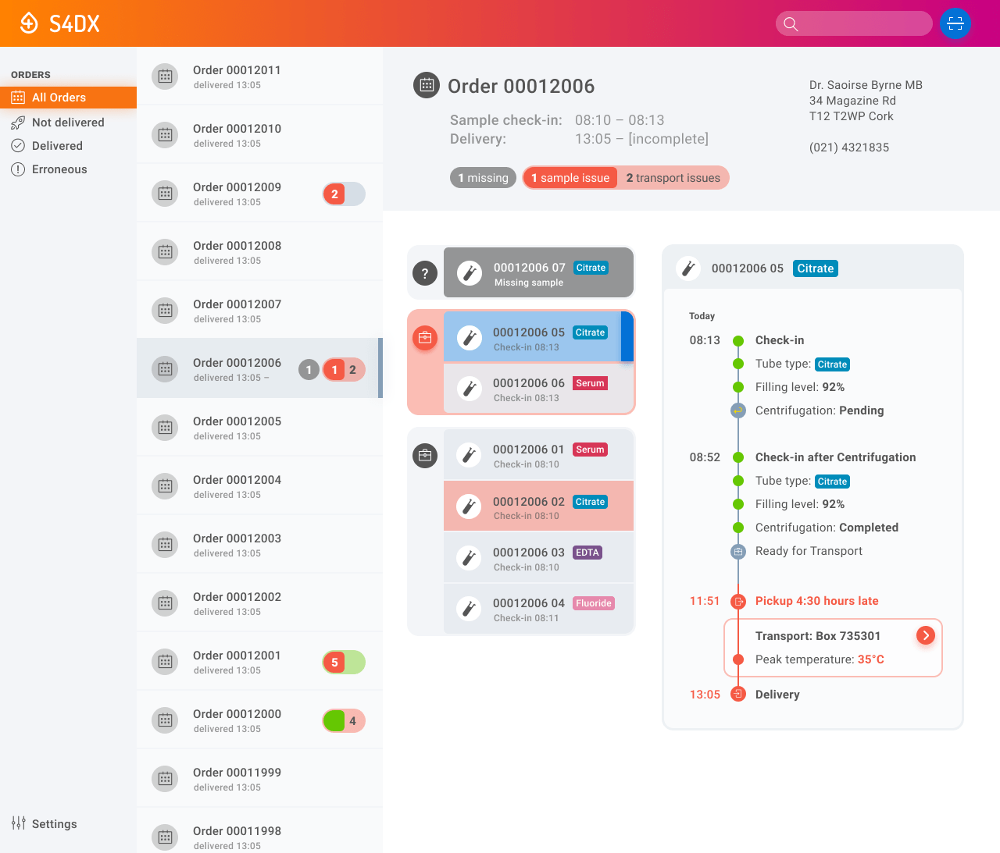

2019
S4DX
UI prototype design for a preanalytic sampling/transport system
Background
In May 2019, I was approached by Smart4Diagnostics to design a UI system for a prediagnostic sampling service that would collect human samples, monitor their transport conditions and report irregularities to the lab.

Details
I prototyped the interfaces of a sampling machine to be operated by practice staff, and a lab dashboard. The sampling machine checks for correct categorization as well as additional preparational requirements like centrifugation. The lab dashboard browses all sampling transactions and gives detailed status reports for individual samples and transport batches.
I attended the project through various planning stages of concept streamlining and adapted the prototypes accordingly.